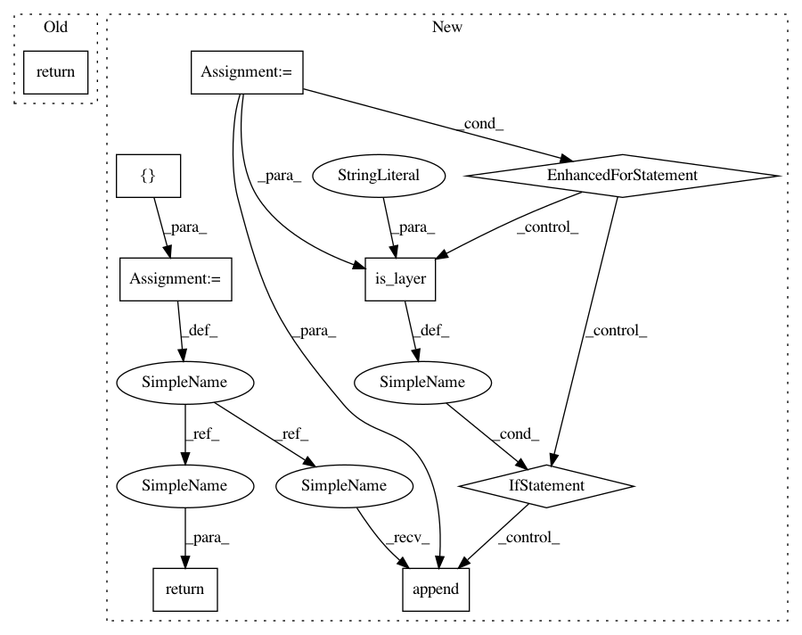

21994919156aac15558f77555538346fb702bcbc,autokeras/nn/graph.py,Graph,deep_layer_ids,#Graph#,626
Before Change
return self._layer_ids_in_order(self._layer_ids_by_type("Dense"))
def deep_layer_ids(self):
return self._conv_layer_ids_in_order() + self._dense_layer_ids_in_order()[:-1]
def wide_layer_ids(self):
return self._conv_layer_ids_in_order()[:-1] + self._dense_layer_ids_in_order()[:-1]
After Change
return self._layer_ids_in_order(self._layer_ids_by_type("Dense"))
def deep_layer_ids(self):
ret = []
for layer_id in self.get_main_chain_layers():
if is_layer(self.layer_list[layer_id], "GlobalAveragePooling"):
break
ret.append(layer_id)
return ret
def wide_layer_ids(self):
return self._conv_layer_ids_in_order()[:-1] + self._dense_layer_ids_in_order()[:-1]
In pattern: SUPERPATTERN
Frequency: 4
Non-data size: 9
Instances
Project Name: jhfjhfj1/autokeras
Commit Name: 21994919156aac15558f77555538346fb702bcbc
Time: 2018-11-26
Author: jhfjhfj1@gmail.com
File Name: autokeras/nn/graph.py
Class Name: Graph
Method Name: deep_layer_ids
Project Name: jhfjhfj1/autokeras
Commit Name: 21994919156aac15558f77555538346fb702bcbc
Time: 2018-11-26
Author: jhfjhfj1@gmail.com
File Name: autokeras/nn/graph.py
Class Name: Graph
Method Name: _get_pooling_layers
Project Name: keras-team/autokeras
Commit Name: 21994919156aac15558f77555538346fb702bcbc
Time: 2018-11-26
Author: jhfjhfj1@gmail.com
File Name: autokeras/nn/graph.py
Class Name: Graph
Method Name: deep_layer_ids